← Overall ranking · Lab gallery
F11 · Quote Details — version ranking
Family task: Review a quote, commercial terms and agreement status; inspect any available decision path without accepting or paying.
Baseline context: Captured accepted Khandesh Spice quote #01a10a2b, Rs.75,000, signed 5 Oct 2026. Breakdown: Rs.28,000 storefront, Rs.32,000 integration, Rs.15,000 training; payment schedule 30/40/30. Names follow page titles rather than stale manifest descriptions.
Leading version(s): V2, V5 · Confidence: low — Accepted-state decision path unavailable; clause probe inconclusive. Single-evaluator screenshots, keyboard sampling and automated diagnostics only; no assistive-technology test.
Tie groups: V2, V5 (65.0–65.0); V1, V4 (58.8–58.8) · Production comparison: Comparison place #1 of 6 at 71.2. Lab-only winner remains V2.
Manual repairs applied · 29 October 2026. V1–V5 have been updated. F11 fix log and current verification.
Scores, issues and screenshots below are the original pre-fix review, not a new ranking. “Source (unmodified)” refers to that historical snapshot; the linked pages now include repairs.
Lab-only scores
| Rank | Version | Total /100 | Task clarity (w25) | Usability (w20) | Visual craft (w15) | Responsive (w15) | Accessibility (w15) | Integrity (w10) | Major+ issues |
|---|---|---|---|---|---|---|---|---|---|
| #1= | V2 · Financial Audit Sheet | 65.0 | 4 /4 | 2 /4 | 3 /4 | 1 /4 | 2 /4 | 3 /4 | 1 |
| #1= | V5 · Milestone Checkout Workbench | 65.0 | 4 /4 | 2 /4 | 3 /4 | 1 /4 | 2 /4 | 3 /4 | 1 |
| #3= | V1 · Sticky Commercial Rail | 58.8 | 3 /4 | 2 /4 | 3 /4 | 1 /4 | 2 /4 | 3 /4 | 1 |
| #3= | V4 · Contract-First Legal Inspector | 58.8 | 3 /4 | 2 /4 | 3 /4 | 1 /4 | 2 /4 | 3 /4 | 1 |
| #5 | V3 · Smart-File Stepper | 56.2 | 3 /4 | 2 /4 | 3 /4 | 1 /4 | 2 /4 | 2 /4 | 1 |
Formula: total = Σ(weight × score ÷ 4). Dimension scores are integers 0–4 against fixed anchors (25 task clarity · 20 usability · 15 visual craft · 15 responsive · 15 accessibility · 10 integrity). Totals within 2.0 form a practical group; ties are ordered by task clarity, fewer major/critical issues, then responsive score; exact ties after these checks share rank (=).
Production page report and comparison rank
Comparison place #1 of 6 at 71.2. Lab-only winner remains V2.
Live production reference. Same rubric, separate from lab version records. Not a lab template and not an automatic winner. Route: /quotes/:id. Outcome: reviewed. Confidence: medium.
| Comparison place | Page | Total /100 | Task clarity | Usability | Visual craft | Responsive | Accessibility | Integrity | Major+ issues |
|---|---|---|---|---|---|---|---|---|---|
| #1 | Production · /quotes/:id | 71.2 | 3 /4 | 3 /4 | 3 /4 | 3 /4 | 2 /4 | 3 /4 | 1 |
A quote detail page opened from the list. The page included terms, deliverables, accept, pay, and download. Accept and pay were not used. Amounts and names were omitted.
Order if production is included
- Production — 71.2 · comparison #1
- V2 — 65.0 · comparison #2 · inside a 2.0-point group
- V5 — 65.0 · comparison #2 · inside a 2.0-point group
- V1 — 58.8 · comparison #4 · inside a 2.0-point group
- V4 — 58.8 · comparison #4 · inside a 2.0-point group
- V3 — 56.2 · comparison #6
Lab-only ranks in the table above are unchanged. Inside a 2.0-point group, task clarity, fewer major issues, then responsive score decide the comparison place.
Observed issues
- Shared shell contrast finding.
Not observed
- The decision controls were seen but not keyboard-tested.
Desktop document overflow was 0 on reviewed routes. An earlier mobile pass of accounts A and B also had no document overflow and a menu control; opening that menu was not proven. Dark mode was not activated. axe-core reported four serious color-contrast nodes on the shared shell. No production screenshot was stored. None stored. Production pages can contain account data.
Shared shell / family-wide findings
- The accepted-state core decision action was not testable, so interaction and payment workflow conclusions are limited.
- All five have 182–200px document horizontal overflow at mobile, attributable at least in part to the header; dark theme has 30–56 axe contrast nodes, light theme zero.
- Mobile navigation probe selector did not match the visible hamburger; no failure inferred.
- Captured-state and variant controls are lab affordances, not automatic product defects.
Per-version evidence
#3= · V1 · Sticky Commercial Rail — 58.8
Source (unmodified): client-portal-lab/families/F11-quote-details/V1/index.html
· Raw evidence: review-evidence/raw/F11-V1-raw.json
Task clarity (3/4): Accepted status and a signed-agreement rail make the current state clear; line items and payment schedule follow.
Usability (2/4): Counter-proposal unavailable in the captured accepted state; expansion probe inconclusive, so decision workflow not verified.
Visual craft (3/4): Readable commercial rail, but the line-item table is dense.
Responsive (1/4): 200px document overflow at mobile; header and table are clipped.
Accessibility (2/4): Light axe clean; dark contrast has 30 flagged nodes, keyboard sampling 12/12 focus-styled.
Integrity (3/4): Signed date and project link ground the accepted state; backend-like PDF endpoint appears in the rail.
Interaction / task results (V1)
| Task | Result |
|---|---|
| T1_first_screen | H1='Quote #01a10a2b ✓ Accepted'; see desktop/mobile top screenshots |
| T2_keyboard | 12/12 stops focus-styled, 12/12 in viewport |
| T3_core_desktop | not testable (no button matching /request changes|counter|revise/i) |
| T3_core_mobile | not testable (no button matching /request changes|counter|revise/i) |
| T3_supp_desktop | partial: Expand contract clause/disclosure (Accepted-state quote; no counter-propose offered) |
| T4_theme | toggle: pass (dark false->true); dark capture applied=True |
| T5_demo_honesty | no [data-demo] element probed (none present or pilot family - see probe2) |
| T6_mobile | h-scroll mobile=200; nav probe opened=False btnW=None; tap<24px=3 |
| T7_axe | desktop: no violations; dark: color-contrast x30 |
Issues (2)
- major
F11-V1-I1Horizontal page scroll at 390px (200px); rightmost: {'tag': 'BUTTON', 'cls': 'avatar-btn', 'right': 590} (raw overflow_mobile; F11-V1-mobile-light-top.png) - minor
F11-V1-I2axe dark: color-contrast x30 (.brand-mark, .portal-pill) (axe-core 4.10.2 dark)

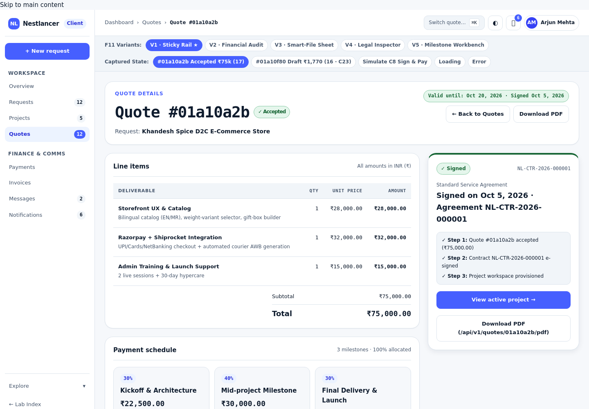

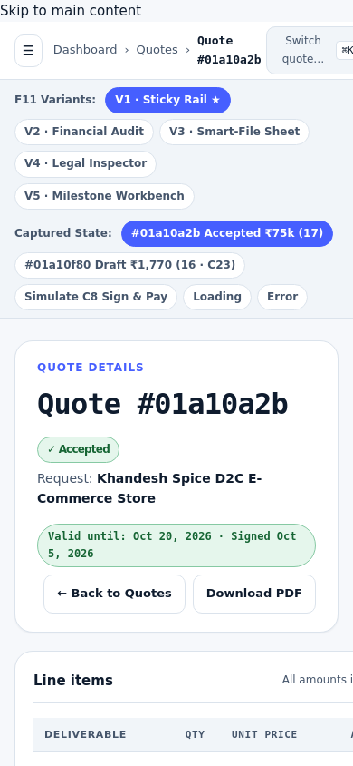

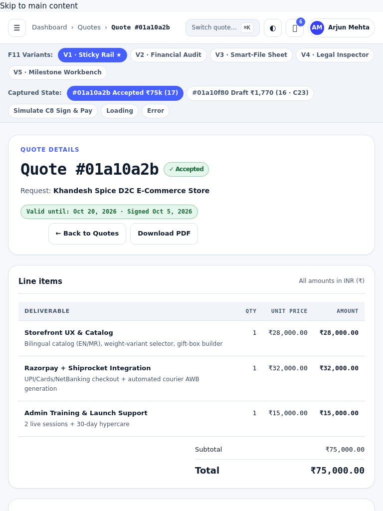

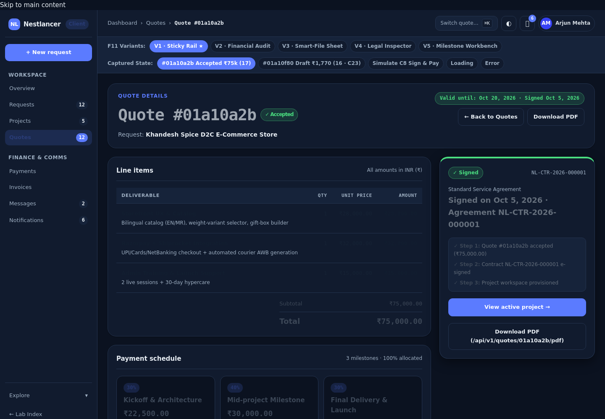


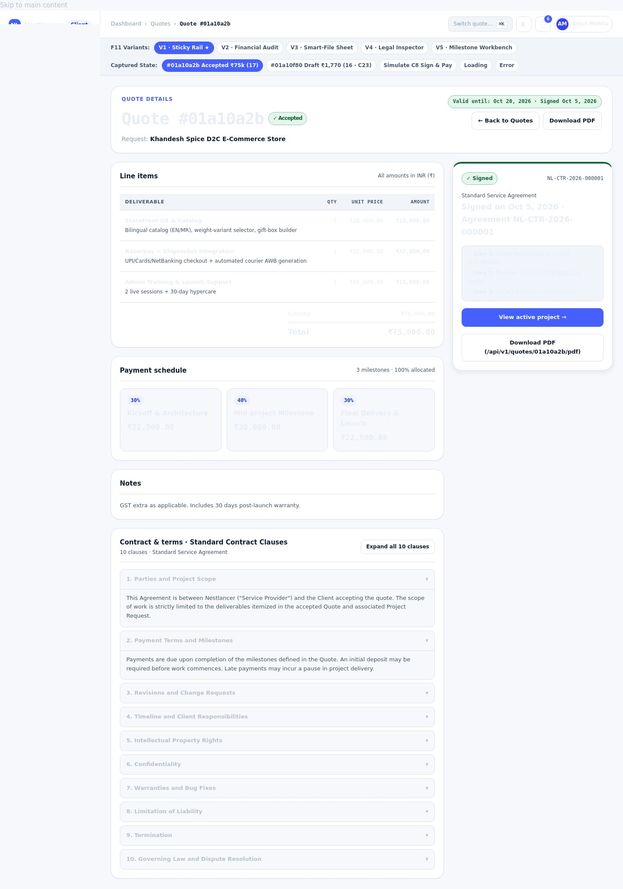
#1= · V2 · Financial Audit Sheet — 65.0
Source (unmodified): client-portal-lab/families/F11-quote-details/V2/index.html
· Raw evidence: review-evidence/raw/F11-V2-raw.json
Task clarity (4/4): Total, tax, first milestone and signed status are presented together; line items and payment schedule can be compared side by side.
Usability (2/4): Core counter-proposal task not testable for accepted quote; clause probe inconclusive.
Visual craft (3/4): A concise financial summary and distinct sections aid scanning.
Responsive (1/4): 182px document overflow at 390px; KPIs stack, while header clips.
Accessibility (2/4): Axe clean light; 41 contrast nodes flagged dark; 12/12 sampled focus stops styled.
Integrity (3/4): Rs.75,000 and 30/40/30 schedule are visible; not a verified payable checkout.
Interaction / task results (V2)
| Task | Result |
|---|---|
| T1_first_screen | H1='Quote #01a10a2b Accepted'; see desktop/mobile top screenshots |
| T2_keyboard | 12/12 stops focus-styled, 12/12 in viewport |
| T3_core_desktop | not testable (no button matching /request changes|counter|revise/i) |
| T3_core_mobile | not testable (no button matching /request changes|counter|revise/i) |
| T3_supp_desktop | partial: Expand contract clause/disclosure (Accepted-state quote; no counter-propose offered) |
| T4_theme | toggle: pass (dark false->true); dark capture applied=True |
| T5_demo_honesty | no [data-demo] element probed (none present or pilot family - see probe2) |
| T6_mobile | h-scroll mobile=182; nav probe opened=False btnW=None; tap<24px=3 |
| T7_axe | desktop: no violations; dark: color-contrast x41 |
Issues (2)
- major
F11-V2-I1Horizontal page scroll at 390px (182px); rightmost: {'tag': 'BUTTON', 'cls': 'avatar-btn', 'right': 572} (raw overflow_mobile; F11-V2-mobile-light-top.png) - minor
F11-V2-I2axe dark: color-contrast x41 (.brand-mark, .portal-pill) (axe-core 4.10.2 dark)

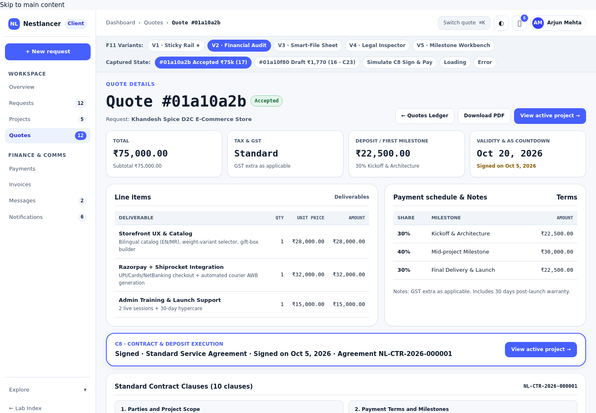

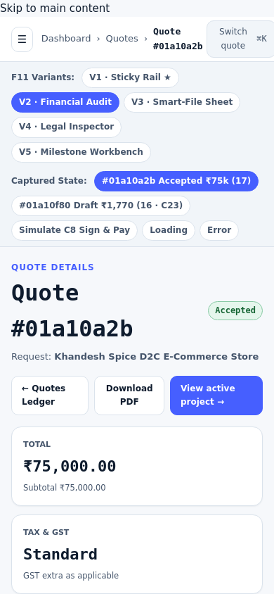

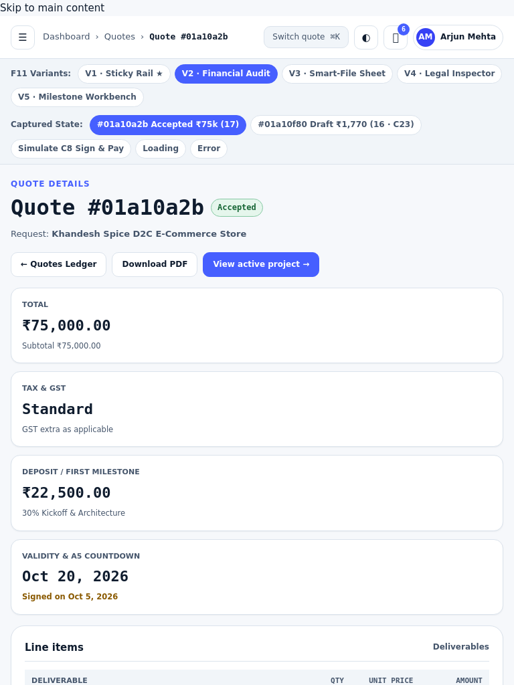

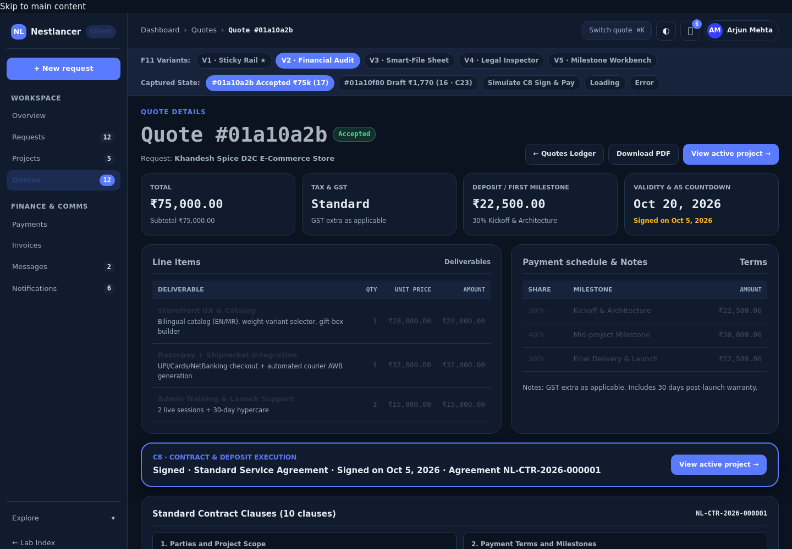


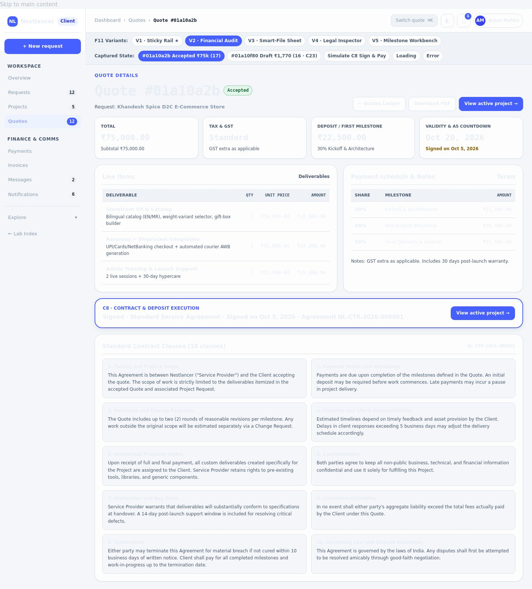
#5 · V3 · Smart-File Stepper — 56.2
Source (unmodified): client-portal-lab/families/F11-quote-details/V3/index.html
· Raw evidence: review-evidence/raw/F11-V3-raw.json
Task clarity (3/4): Document-like presentation lists line items, schedule and clauses but the sign-and-pay step is still shown for an accepted quote.
Usability (2/4): Counter-proposal not testable in accepted state; probe did not verify clause interaction.
Visual craft (3/4): Print-style document is coherent but information is small on desktop.
Responsive (1/4): 182px overflow on mobile and document header plus stepper postpone financial details.
Accessibility (2/4): Axe light clean; dark contrast flags 56 nodes; seven small mobile targets.
Integrity (2/4): C8 internal identifier appears in the stepper; no payment action was attempted.
Interaction / task results (V3)
| Task | Result |
|---|---|
| T1_first_screen | H1='Quote #01a10a2b'; see desktop/mobile top screenshots |
| T2_keyboard | 12/12 stops focus-styled, 12/12 in viewport |
| T3_core_desktop | not testable (no button matching /request changes|counter|revise/i) |
| T3_core_mobile | not testable (no button matching /request changes|counter|revise/i) |
| T3_supp_desktop | partial: Expand contract clause/disclosure (Accepted-state quote; no counter-propose offered) |
| T4_theme | toggle: pass (dark false->true); dark capture applied=True |
| T5_demo_honesty | no [data-demo] element probed (none present or pilot family - see probe2) |
| T6_mobile | h-scroll mobile=182; nav probe opened=False btnW=None; tap<24px=7 |
| T7_axe | desktop: no violations; dark: color-contrast x56 |
Issues (3)
- major
F11-V3-I1Horizontal page scroll at 390px (182px); rightmost: {'tag': 'BUTTON', 'cls': 'avatar-btn', 'right': 572} (raw overflow_mobile; F11-V3-mobile-light-top.png) - minor
F11-V3-I2axe dark: color-contrast x56 (.brand-mark, .portal-pill) (axe-core 4.10.2 dark) - minor
F11-V3-I37 mobile tap targets under 24px, e.g. [{'text': 'Skip to main content', 'w': 156, 'h': 18}, {'text': 'Dashboard', 'w': 71, 'h': 21}, {'text': 'Quotes', 'w': 46, 'h': 21}] (raw tapTargetsMobile)

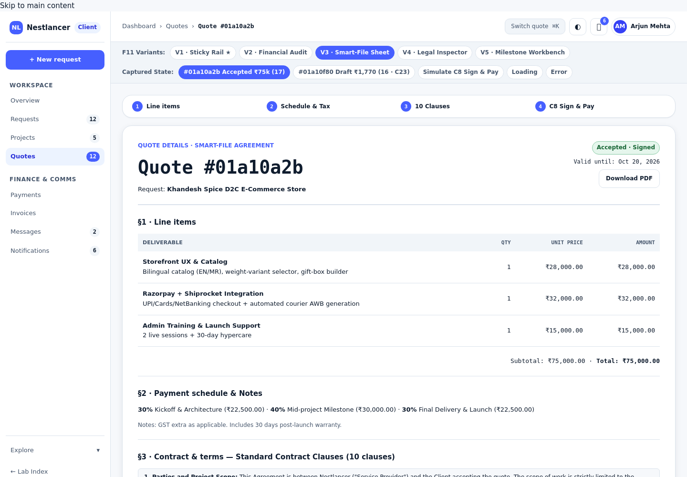

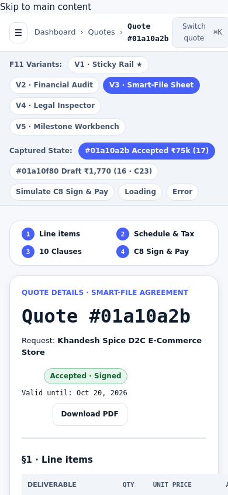

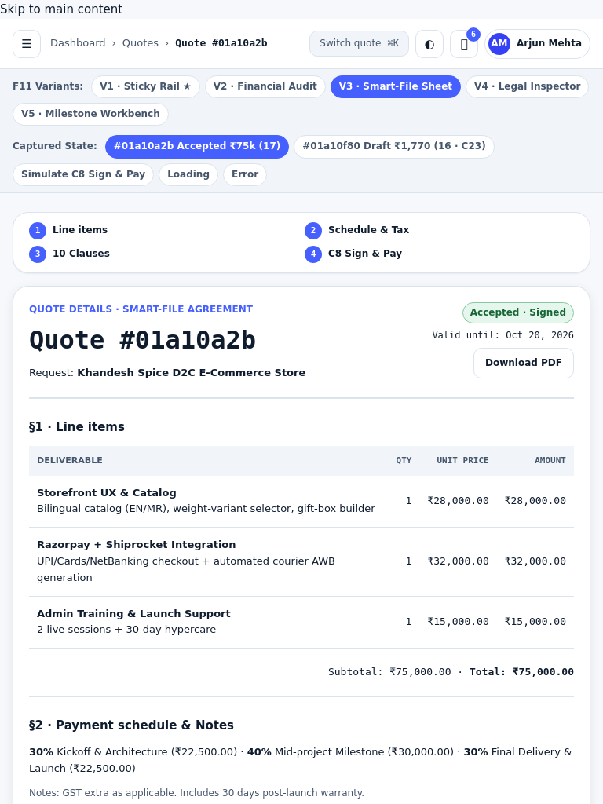

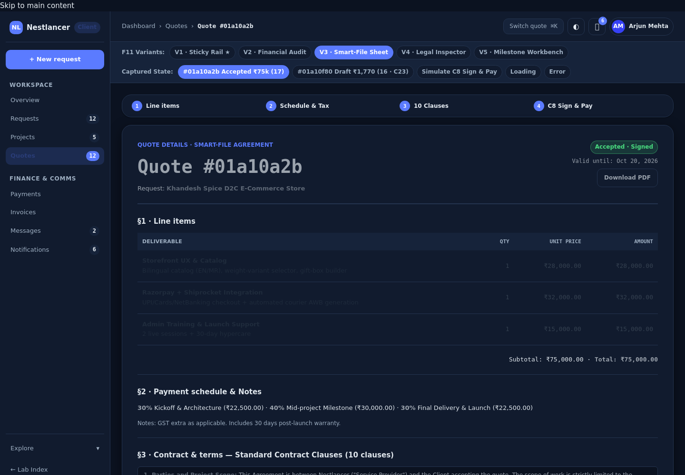


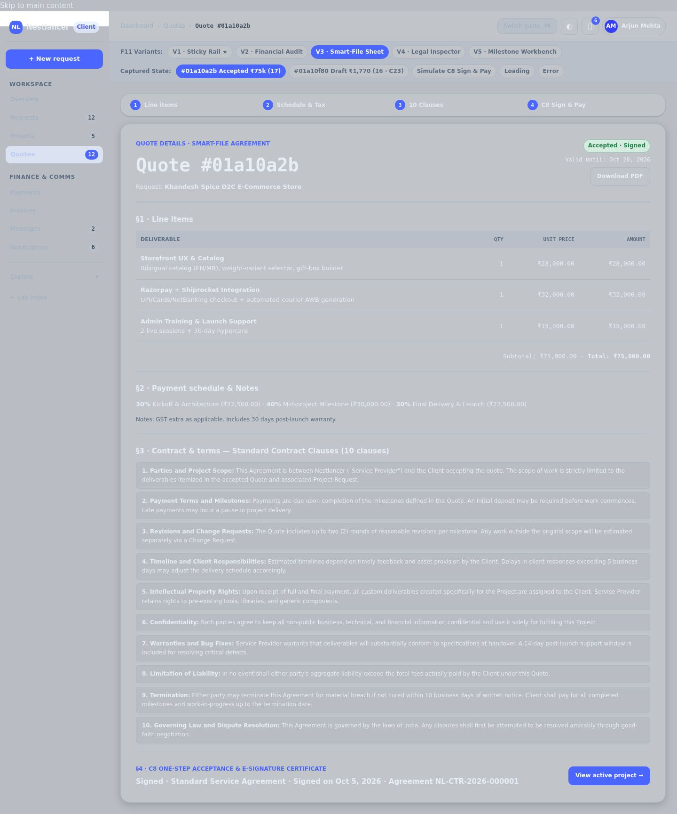
#3= · V4 · Contract-First Legal Inspector — 58.8
Source (unmodified): client-portal-lab/families/F11-quote-details/V4/index.html
· Raw evidence: review-evidence/raw/F11-V4-raw.json
Task clarity (3/4): Section index supports navigating legal terms; accepted state and Rs.75,000 are prominent.
Usability (2/4): Request-changes not offered in accepted state; no claim that contract jumps or clauses were verified.
Visual craft (3/4): Index and contract sections provide an understandable document structure.
Responsive (1/4): 182px overflow on mobile; narrow project button wraps over several lines.
Accessibility (2/4): Light axe clean; dark contrast 38 nodes; keyboard sample 12/12 styled.
Integrity (3/4): The signed state and project link provide context; internal A5/C8 codes remain visible.
Interaction / task results (V4)
| Task | Result |
|---|---|
| T1_first_screen | H1='Quote #01a10a2b Accepted'; see desktop/mobile top screenshots |
| T2_keyboard | 12/12 stops focus-styled, 12/12 in viewport |
| T3_core_desktop | not testable (no button matching /request changes|counter|revise/i) |
| T3_core_mobile | not testable (no button matching /request changes|counter|revise/i) |
| T3_supp_desktop | partial: Expand contract clause/disclosure (Accepted-state quote; no counter-propose offered) |
| T4_theme | toggle: pass (dark false->true); dark capture applied=True |
| T5_demo_honesty | no [data-demo] element probed (none present or pilot family - see probe2) |
| T6_mobile | h-scroll mobile=182; nav probe opened=False btnW=None; tap<24px=3 |
| T7_axe | desktop: no violations; dark: color-contrast x38 |
Issues (2)
- major
F11-V4-I1Horizontal page scroll at 390px (182px); rightmost: {'tag': 'BUTTON', 'cls': 'avatar-btn', 'right': 572} (raw overflow_mobile; F11-V4-mobile-light-top.png) - minor
F11-V4-I2axe dark: color-contrast x38 (.brand-mark, .portal-pill) (axe-core 4.10.2 dark)

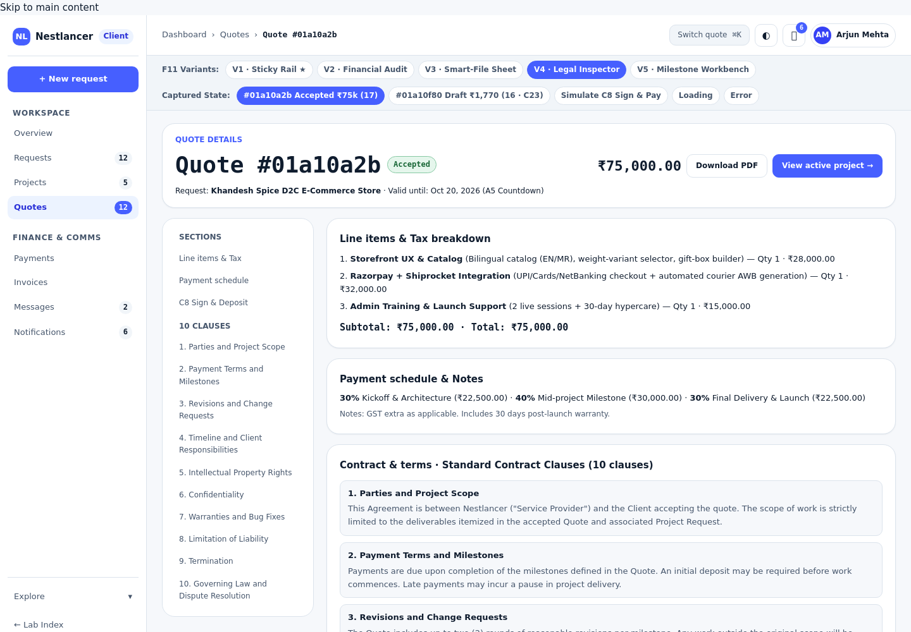

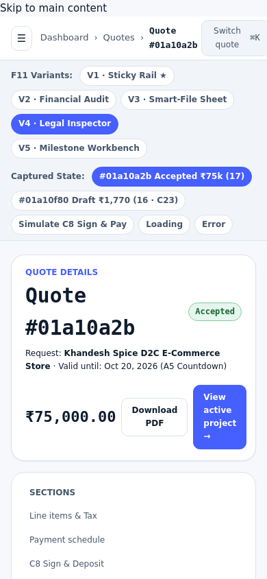

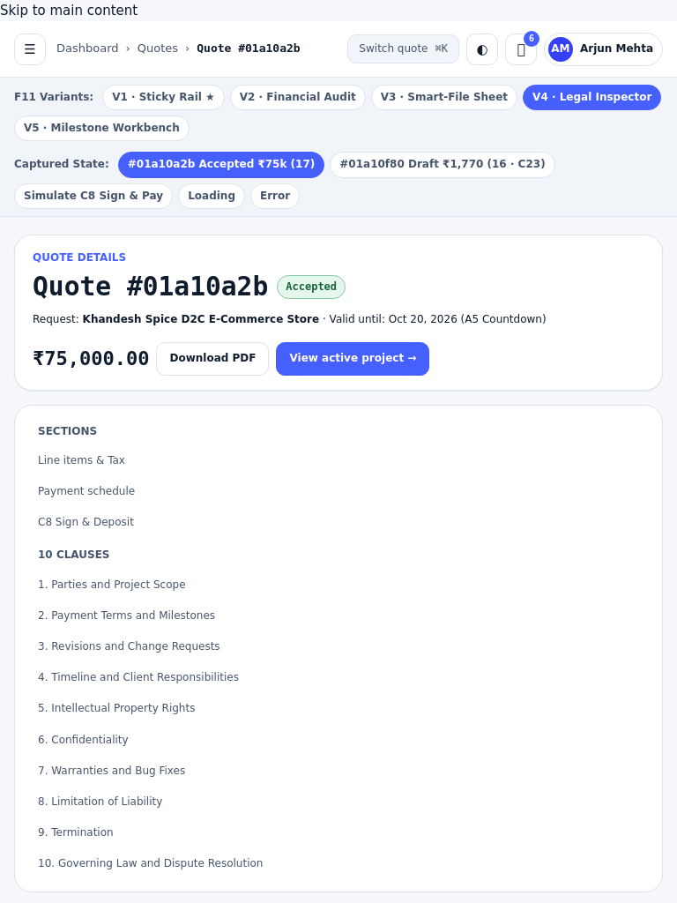

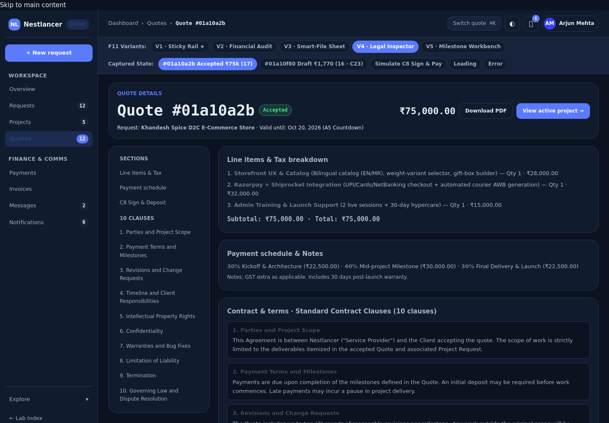


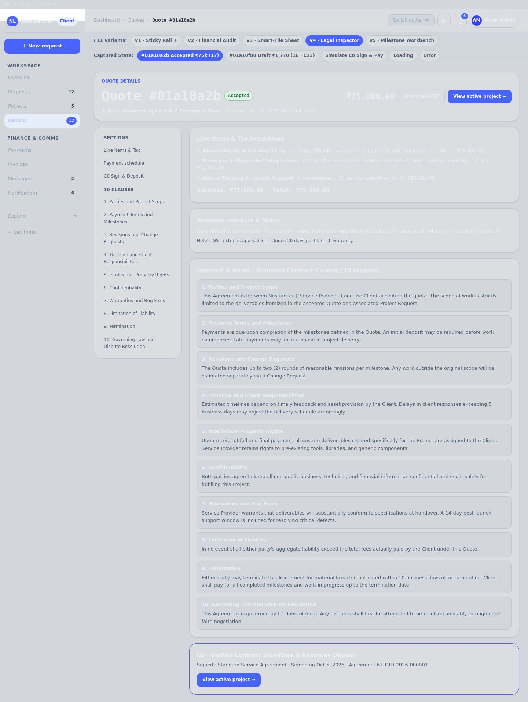
#1= · V5 · Milestone Checkout Workbench — 65.0
Source (unmodified): client-portal-lab/families/F11-quote-details/V5/index.html
· Raw evidence: review-evidence/raw/F11-V5-raw.json
Task clarity (4/4): Line-item breakdown alongside a signed-agreement and milestone rail makes scope, next stage and amounts easy to relate.
Usability (2/4): Accepted-state counter-proposal unavailable and clause probe inconclusive; no sign or payment attempted.
Visual craft (3/4): Simple side-by-side layout with compact milestone amounts.
Responsive (1/4): 182px overflow at 390px; rail follows the line items on the narrow layout.
Accessibility (2/4): Light axe clean; 52 dark contrast nodes flagged; 12/12 sampled focus stops styled.
Integrity (3/4): Clearly labels agreement signed and links to the active project; C8 appears in the rail title.
Interaction / task results (V5)
| Task | Result |
|---|---|
| T1_first_screen | H1='Quote #01a10a2b Accepted'; see desktop/mobile top screenshots |
| T2_keyboard | 12/12 stops focus-styled, 12/12 in viewport |
| T3_core_desktop | not testable (no button matching /request changes|counter|revise/i) |
| T3_core_mobile | not testable (no button matching /request changes|counter|revise/i) |
| T3_supp_desktop | partial: Expand contract clause/disclosure (Accepted-state quote; no counter-propose offered) |
| T4_theme | toggle: pass (dark false->true); dark capture applied=True |
| T5_demo_honesty | no [data-demo] element probed (none present or pilot family - see probe2) |
| T6_mobile | h-scroll mobile=182; nav probe opened=False btnW=None; tap<24px=3 |
| T7_axe | desktop: no violations; dark: color-contrast x52 |
Issues (2)
- major
F11-V5-I1Horizontal page scroll at 390px (182px); rightmost: {'tag': 'BUTTON', 'cls': 'avatar-btn', 'right': 572} (raw overflow_mobile; F11-V5-mobile-light-top.png) - minor
F11-V5-I2axe dark: color-contrast x52 (.brand-mark, .portal-pill) (axe-core 4.10.2 dark)

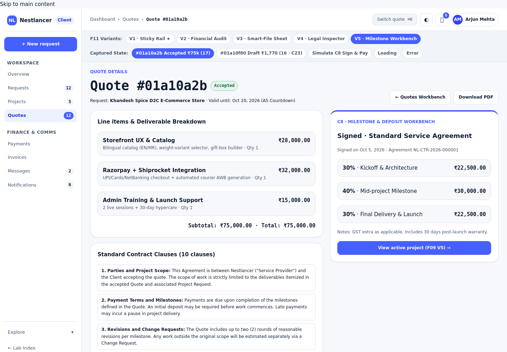

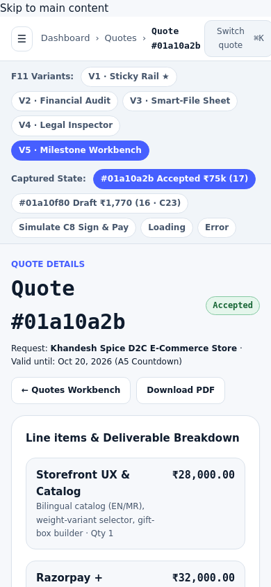

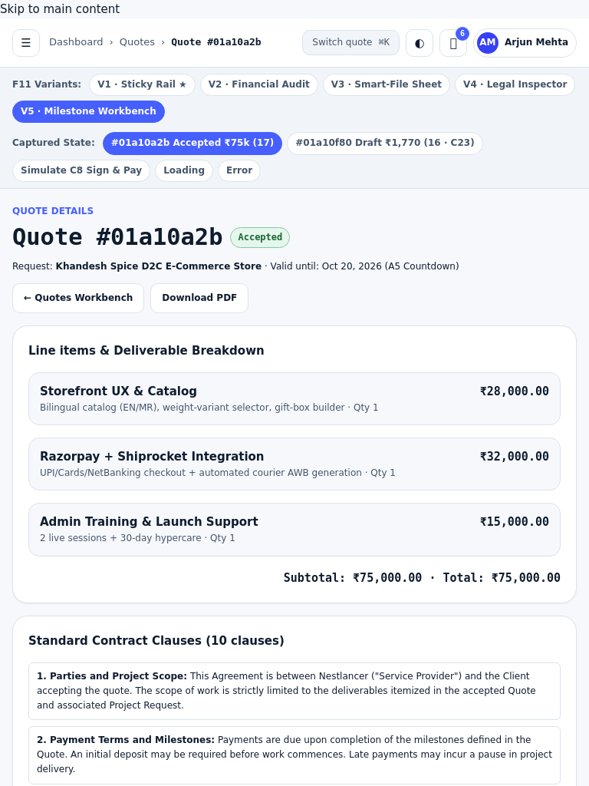

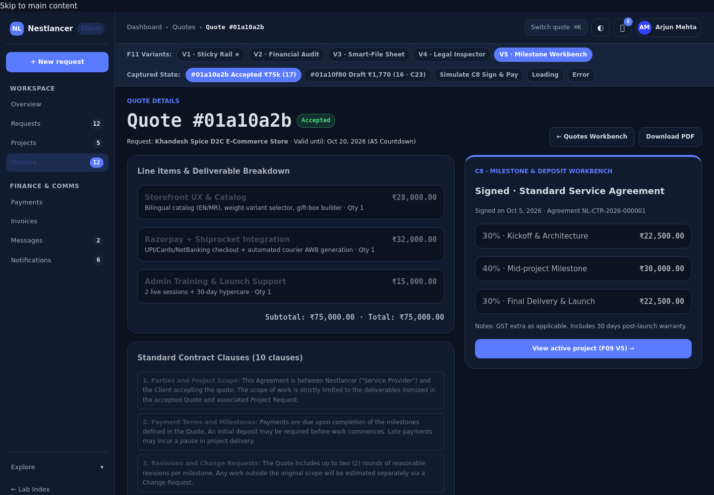


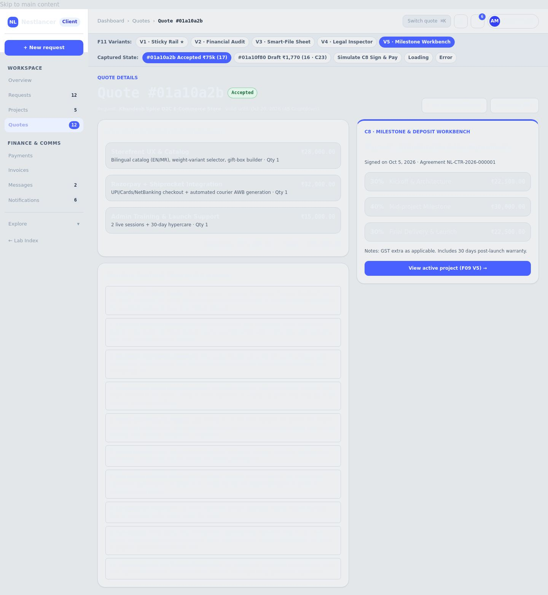
Blind comparison boards
Seeded labels A–E; the screenshots contain in-page version identifiers, so true blinding was incomplete. Mapping (review-evidence/raw/blind-mapping.json): A=V5 · B=V2 · C=V1 · D=V4 · E=V3.
One AI evaluator generated the board and mapping; board notes above were recorded in the session transcript before the mapping file was opened. This is a bias-reduction aid, not true experimental blinding.

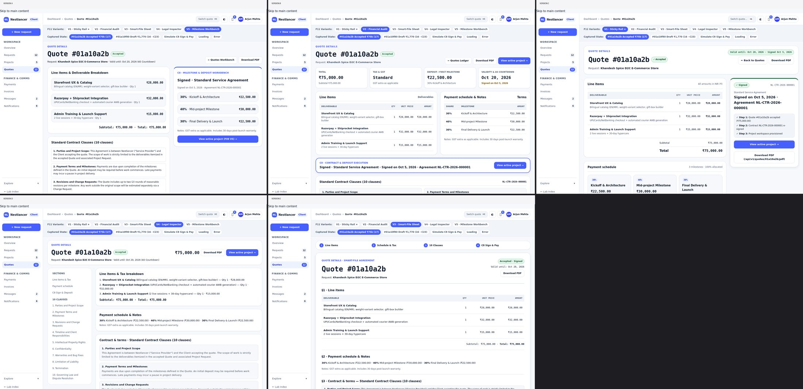

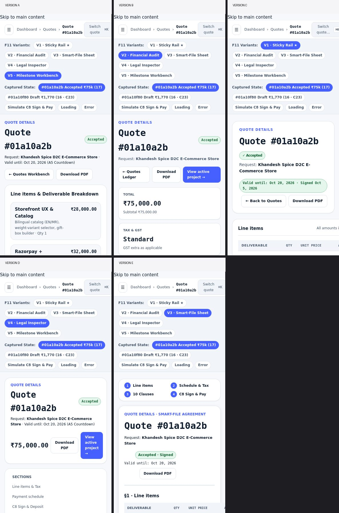
Pairwise consistency check (one evaluator, not votes)
| Pair | Better for family task | Reason |
|---|---|---|
| V2 vs V5 | tie | Independent inspection: clarity and evidence limitations described in each rubric note; pair is a consistency check, not a vote. |
| V2 vs V1 | V2 | Independent inspection: clarity and evidence limitations described in each rubric note; pair is a consistency check, not a vote. |
| V2 vs V4 | V2 | Independent inspection: clarity and evidence limitations described in each rubric note; pair is a consistency check, not a vote. |
| V2 vs V3 | V2 | Independent inspection: clarity and evidence limitations described in each rubric note; pair is a consistency check, not a vote. |
| V5 vs V1 | V5 | Independent inspection: clarity and evidence limitations described in each rubric note; pair is a consistency check, not a vote. |
| V5 vs V4 | V5 | Independent inspection: clarity and evidence limitations described in each rubric note; pair is a consistency check, not a vote. |
| V5 vs V3 | V5 | Independent inspection: clarity and evidence limitations described in each rubric note; pair is a consistency check, not a vote. |
| V1 vs V4 | tie | Independent inspection: clarity and evidence limitations described in each rubric note; pair is a consistency check, not a vote. |
| V1 vs V3 | V1 | Independent inspection: clarity and evidence limitations described in each rubric note; pair is a consistency check, not a vote. |
| V4 vs V3 | V4 | Independent inspection: clarity and evidence limitations described in each rubric note; pair is a consistency check, not a vote. |
Pair entries summarize rubric order after scoring; they are not independent blind comparisons or votes. Interaction evidence is incomplete.
Coverage, limitations, change log
Persona coverage (no votes): Coverage relevance only: shared mobile header/menu defect is most relevant to phone one-handed and motor-access profiles; 4.33:1 contrast to low-vision profiles; V4 missing H1 and V1 inert tab pattern to keyboard/screen-reader profiles; V3 duplicated payment to cognitive-access and first-time profiles; V5 context-thin density to first-time profiles. No persona preferred or voted.
Task script: Desktop/mobile captured accepted state; inspect request changes if available, without accepting or paying. No such control found; supplementary clause probe inconclusive.
- First-pass scores assigned from blind boards + raw evidence before reading prior winner claims (still unread).
Environment: Chromium 131.0.6778.33 (HeadlessChrome, Playwright bundled build chromium-1148) · Playwright 1.49.1 (pinned in review-evidence/tooling/package.json)
· axe-core 4.10.2 (pinned) · NOT cross-machine pixel-reproducible: no Docker in sandbox; pinned Playwright/Chromium used consistently for every page in this run.
Full record: review-evidence/review-manifest.json; machine data: review-evidence/scores.json.